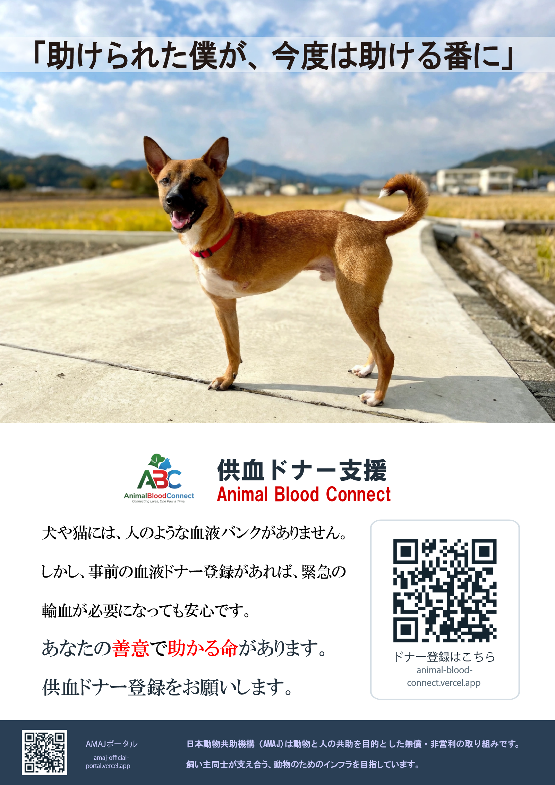

🏥 院内・施設掲示および印刷のご案内
日本動物共助機構（AMAJ）では、動物医療の現場および飼い主コミュニティの相互支援を推進するため、本ポスターを無償公開しています。
🖨️ 推奨印刷設定
・推奨用紙サイズ：A3縦（待合室や遠隔からの視認性に最適化されています）
・縮小印刷：プリンタ設定で「用紙に合わせて縮小」を選択することでA4縦サイズでも鮮明に印刷可能です。
・用紙種類：厚手普通紙、または光沢を抑えたマットコート紙を推奨します。
📍 推奨掲示場所
- 供血ドナー支援版：診察待合室、受付カウンター横、会計スペース、輸血・予防接種案内コーナー
- 迷子動物捜索版：病院出入口付近、待合室情報掲示板、トリミングサロン受付、一時預かりコーナー
⚖️ 利用許諾・著作権について
全国の動物病院、トリミングサロン、動物保護施設、自治体関連窓口等において、事前の許可申請なく完全無償で印刷・掲示・配布いただけます。
※ポスター内のデザイン、ロゴマーク、QRコード等の改変や商用再販はご遠慮ください。